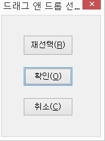

마우스 상태 알림 <없음>
마우스 버튼 상태 알림 <없음>
현재 실제 마우스 커서의 상태를 알려줍니다. 마우스의 상태는 작업중, 편집 등이 있습니다.
실제 마우스의 현재 눌린 버튼 상태를 알려줍니다.
마우스 왼쪽 버튼 클릭 <Numpad /(슬래시)>
마우스 오른쪽 버튼 클릭 <Numpad *(스타)>
실제 마우스 버튼을 키보드로 동작시킬수 있는 기능키입니다. 단축키는 위의 2가지 기능에만 지정이 되어있으며 마우스의 다른 동작들은 키가 지정되어 있지 않습니다.
드래그 앤 드롭이란 작업의 대상이 되는 객체를 마우스 버튼을 누르고 있는 상태에서 이동한 다음 마우스 버튼을 떼면서 원하는 위치에 옮겨놓는 마우스 동작 방법입니다. 아이콘 등의 객체를 필요한 위치에 옮겨 놓을 때 사용합니다.
마우스 드래그 앤 드롭 사용방법
① 이동을 원하는 아이콘 등의 객체에 읽기포인터를 위치합니다.
② <Insert-NumpadDel>키를 눌러 드래그 앤 드롭을 시작합니다.
③ 객체를 옮겨놓을 위치로 읽기포인터를 이동합니다.
④ 다시 <Insert-NumpadDel>키를 누릅니다. 그러면 '드래그 앤 드롭 선택' 대화상자가 나타납니다.

⑤ 대화상자에서 '확인' 버튼을 누르면 해당 위치로 객체가 이동됩니다. '재선택' 버튼은 현재 위치에서 드래그 앤 드롭을 다시 시작합니다.